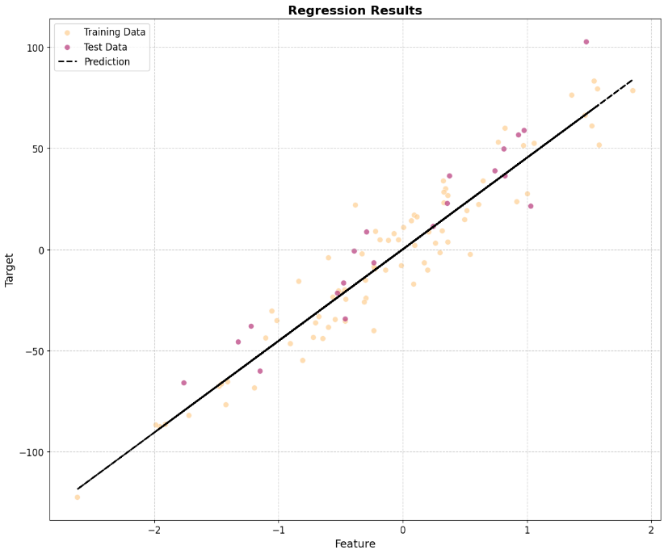
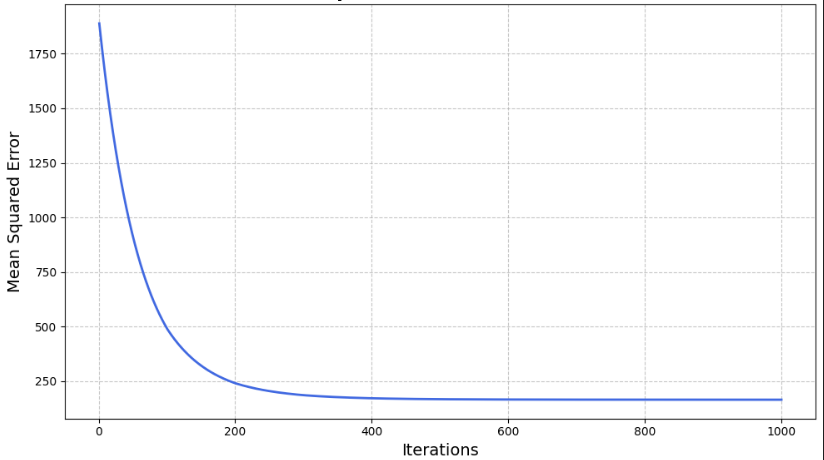
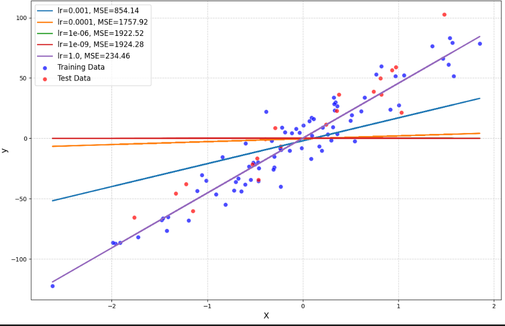
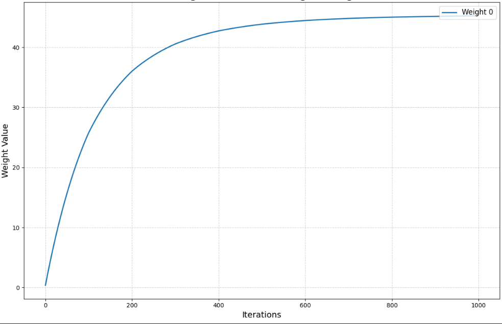
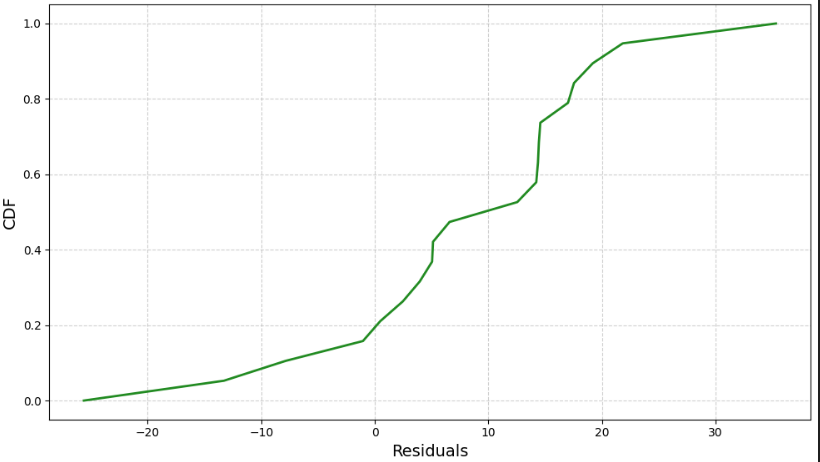

Varun Rao
Published on March 29, 2025
Understanding the Basic Architecture
In this deep dive, we'll explore linear regression from implementation to insights, examining how they predict some information.
Linear Regression Class Implementation
class LinearRegression:
def __init__(self,lear_rate=0.001,nf_iters=1000,tolerance=1e-6,patience=50,lr_decay_factor=0.9, decay_interval=100):
self.weights = None
self.lear_rate = lear_rate
self.nf_iters = nf_iters
self.bias = None
self.mse_history = [] # Store MSE at each iteration for seeing the curve
self.weights_history = [] # Store weight changes for plotting purposes
self.tolerance = tolerance
self.patience = patience
self.lr_decay_factor = lr_decay_factor
self.decay_interval = decay_interval
Required Functions:
- fit - fits the model
- compute_gradients - Computes the derivative
- mean_squared_error - Find the error for evaluation
- predict - Make predictions with trained model
The model starts with initailizing weights and biases randomly or zero then change them rigorously on the basis of gradient descents with a learning rate for some epochs.
Model Performance Visualization

Showing how much the predictions are near to actual datapoints

mean_squared_error is decreasing with time in exponential way and making almost no progress after some time.

the learning rate which decides how much change should be done with the gradient descents

the changements in weight with iterations

Shows the cummulative distribution function of the residuals of predictions.
Key Learnings and Challenges
- Optimization Finding an optimum lear_rate is crucial for Finding the best model fast.
- multicollinearityWhen two or more independent variables are highly correlated,the model is not very perfect.
- Regularization can help prevent overfitting by adding penalty terms to the cost function.
- LimitsSensitivity to outliers:,non-linearity.
Model Performance Metrics
Weight initailized
1000
Mean Squared Error
236.470>